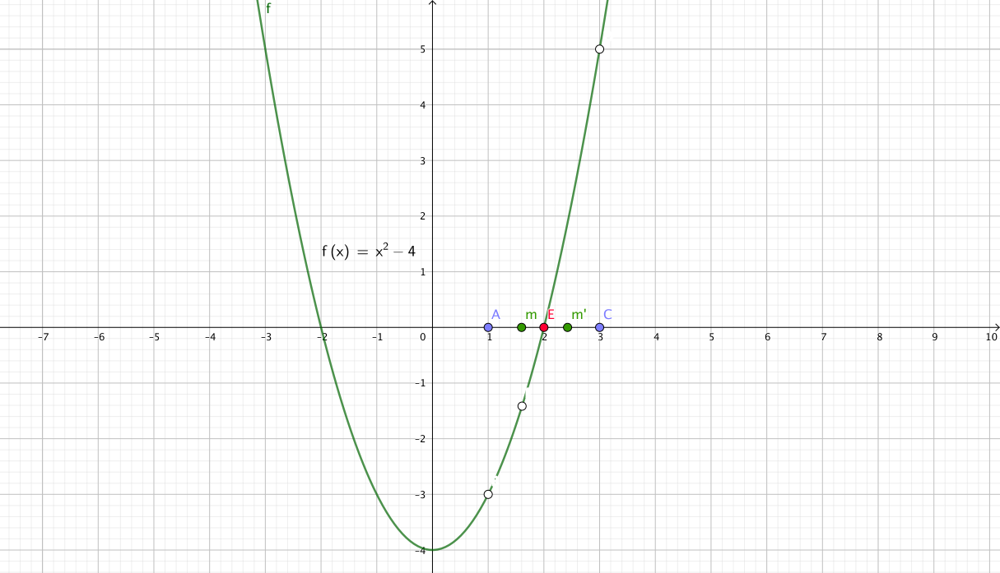
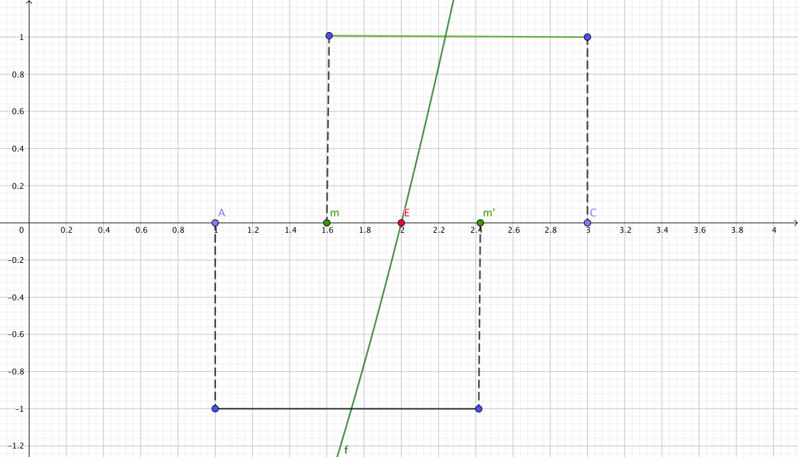

How to write code to find the square root of Integer
Find a square root of Integer, it means to solve a polynomial $f(x) = x^2 - n = 0$
\begin{align*}
f(x) &= x^2 -n \\
0 &= x^2 -n \\
n &= x^2 \\
\sqrt{n} &= x \\
\end{align*}
The above equations DO NOT really tell you who to find the square root of $n$
Let assume me try to find the square root of 4, then we have:
\begin{align*}
x^2 - 4 &= 0 \\
\end{align*}
The graph of $x^2 - 4 = 0$ is below

From the picture above, we can guess a number on x-Axis right hand side of $\color{red}E$ e.g. choose point $C$ as on the picture.
and find the middle point $m$ from $A$ to $C$,
\[
m = m' = \frac{A + C}{2}
\]
If $m^2 < 0$ then the true value of $\sqrt{n}$ must be between $m$ and $C$
If $m'^2 \ge 0 $ then the true value of $\sqrt{n}$ must be between $A$ and $m'$

Let write some code in Swift
Note: 1. we want to keep the approximate value close to
the true value not less than epsilon,[0.00001]
2. If n = 1 then we can just return 1
func squareRoot(n:Int)->Double{
// x^2 - n = 0
var a:Double = 1
var dn = Double(n)
var b:Double = Double(n)
var m:Double = (a + b)/2.0
// initial
let epsilon = 0.00001
if n == 1{
return 1
}else{
while m < epsilon{
m = (a + b)/2.0
if m*m - dn < 0{
a = m
}else{
b = m
}
}
}
return m
}
Other method to find the square root of n is Newton method.